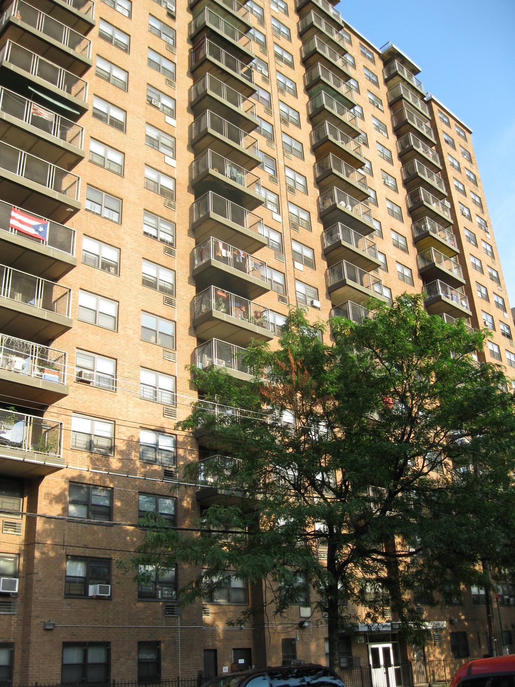

BACK TO SCHOOL JAM · 1973 年 8 月 11 日
纽约布朗克斯区，塞奇威克大道 1520 号，一栋普通公寓楼的活动室。一个叫 Cindy 的女孩办了一场返校派对，想多赚点钱买新学期的衣服。门票：女生 25 美分，男生 50 美分。
负责放音乐的是她的哥哥 Clive Campbell，一个从牙买加移民来的高个子少年，朋友叫他 Kool Herc。他注意到一件事：每首放克唱片里，舞者最疯狂的总是那几秒钟，乐队停下来、只剩鼓的段落。可惜它太短了。
于是他买了两张一样的唱片，放在两台唱机上。一张的鼓点快结束时，他把另一张接上，再把第一张倒回去……那几秒钟的鼓，被他接成了几分钟。很多人把那个晚上看作嘻哈的“生日”。
上一章结尾，我们留下了一段只剩鼓的 break。这一章从它开始。
嘻哈（hip-hop）最初不只是音乐，而是一整套街头文化：打碟、说唱、街舞、涂鸦。它诞生在 1970 年代的布朗克斯，那时这片街区正经历严重的衰败：高速公路穿城而过，许多居民搬走，留下的人很多生活贫困，房子空置甚至被烧毁。买不起乐器、上不起音乐课的年轻人，手边只有家里的唱片和两台旧唱机。嘻哈是一种“用手头仅有的东西做出新东西”的音乐。
what什么是嘻哈
早期的参与者常说嘻哈有“四大元素”：
- DJ：放唱片的人，后来把唱机变成了乐器
- MC（Master of Ceremonies，原意是司仪）：一开始负责在 DJ 旁边喊话、炒热气氛，后来发展成在节拍上押韵的说唱
- Breaking：在 break 段落里跳的地板舞，跳舞的人叫 b-boy、b-girl。2024 年巴黎奥运会曾把它列为比赛项目
- 涂鸦：在地铁车厢和墙上喷出自己名字的“签名”（tag），后来发展成大幅的街头绘画
从音乐上说，嘻哈有两个核心：beat（节拍，通常由 DJ 或制作人用唱片、鼓机、采样器做出来）和说唱（rap，在 beat 上有节奏地说出押韵的歌词）。下面分别讲。
djDJ：把 break 拉长
Kool Herc 的做法后来被叫作“旋转木马”（merry-go-round）：两台唱机、两张一样的唱片，在 break 段落之间来回切换，把几秒钟的鼓变成无限长。他是在牙买加长大的，那里有一种“音响系统”（sound system）派对文化：巨大的音箱、DJ 在麦克风里喊话，这些都被他带到了布朗克斯。
后来的 DJ 把这门手艺越推越远。Grandmaster Flash 研究出更精确的接法，能在唱片上找到 break 的准确位置；据说 Grand Wizzard Theodore 在十几岁时，有一次妈妈进房间让他把音乐关小，他用手按住唱片，来回一蹭，发现了搓碟（scratch）的声音。从此，唱机从“放音乐的机器”变成了一件乐器。
一段乐队的演奏，中间有两小节 break，然后又回到乐队。
把那两小节 break 来回接，接成八小节。
按住唱片前后蹭：一个音被拉成“嘁咔嘁咔”。

mc说唱：节奏里的语言
最早的 MC 只是在 DJ 旁边喊几句：“把手举起来！”“向布朗克斯致意！”渐渐地，喊话变成了押韵的句子，句子变成了整段的歌词。1979 年，一支由唱片公司临时组起来的三人组 The Sugarhill Gang 发行了《Rapper's Delight》，伴奏是请乐队重新演奏的一段迪斯科贝斯线。这首歌长达十几分钟，却成了第一首全国性的说唱热门歌，让纽约以外的人第一次听到了“说唱”。
说唱有两个最重要的东西：
- Flow（流）：字在节拍上怎么排。是规规矩矩落在每一个八分音符上，还是一拍三个字的三连音，还是故意拖在拍子后面
- 押韵：句尾的韵脚（尾韵），句子中间的韵（内韵），以及连着两三个字都押韵的“多音节韵”（中文说唱里叫双押、三押）
每个八分音符一个字，像早期说唱。
一拍三个字，2010 年代很流行。
有空拍，字落在意想不到的地方。
浏览器没法真的“说话”，这里用合成的短音节模拟说唱的节奏骨架，没有真实的歌词。注意听三种排法给人的速度感有什么不同，其实三段的 beat 速度完全一样。
中文怎么押韵
中文说唱押的是韵母：“光”（guang）、“向”（xiang）、“上”（shang）、“亮”（liang）都押 ang 韵。如果连续两个字的韵母都相同，比如“迷茫”（mi mang）和“光芒”（guang mang），就是“双押”。下面是本书原创的几句示范：
sample采样：用唱片做乐器
1980 年代中后期，一种新机器改变了嘻哈：采样器（sampler）。它能把任何声音录下来、切开、在打击垫上重新弹奏。1987 年的 E-mu SP-1200 和 1988 年由 Roger Linn 设计、Akai 生产的 MPC60 成了嘻哈制作人最爱的工具。MPC 上那十六个方形橡胶打击垫，就是本章实验框的样子。
采样的做法大致有三种：
- 循环（loop）：从一张老唱片里截一两小节，原样反复，在上面加鼓
- 切片（chop）：把一段声音切成很多小块，像弹钢琴一样在打击垫上重新排列、改变音高
- 借鼓：把别人唱片里的 break 切下来，重新编排成新的鼓点。上一章的《Funky Drummer》，以及 1969 年 The Winstons 乐队《Amen, Brother》里一段六秒钟的鼓独奏（人称“Amen break”），都被用了成百上千次
一段原创的“灵魂乐唱片”：钢琴、弦乐、和声，还有唱片的沙沙声。
只截第一小节，反复，加上鼓。
切成小块，打乱顺序、调高音、重复。
摇摆与“醉拍”
MPC 有一个很受欢迎的功能叫 swing：把每拍的第二个十六分音符往后推一点，让鼓不那么机械。底特律的制作人 J Dilla 走得更远：他干脆关掉“自动对齐”（quantize），让鼓点故意不在格子上，忽早忽晚，像喝醉了一样，却又说不出的舒服。这种感觉影响了上一章说的新灵魂乐，也影响了后来的 lo-fi 嘻哈。
每一下都在格子上。
往后推，再加一点随机的早晚。
同一段 break 先以原速播放，再加快到约 170 BPM：下一章“丛林”音乐就是这么来的。
采样与版权
采样也带来了法律问题：用别人唱片里的一段声音，需要授权吗？在美国，一首歌通常涉及两份权利：词曲（作品本身）和录音（某一次具体的录制）。采样一段唱片，往往同时用到了两者，所以需要分别取得授权。几个经常被提到的案件：
1991 年的案件之后，唱片公司开始系统地“清理”采样授权，大量使用采样的成本急剧上升。很多人认为，这是 1990 年代后期嘻哈制作从“密集采样”转向“自己演奏或编曲”的原因之一。中国《著作权法》同样规定录音制作者对其录音制品享有复制、发行、信息网络传播等权利，采样在国内同样涉及授权问题。
golden黄金时代：东岸与西岸
1980 年代中期到 1990 年代中期，常被称为嘻哈的“黄金时代”。说唱的题材和风格一下子多了起来：
- Run-DMC：用硬朗的鼓机和摇滚吉他，1986 年和摇滚乐队 Aerosmith 合作翻唱《Walk This Way》，打开了白人青少年的市场
- Public Enemy：用密集、嘈杂的采样墙和政治性的歌词，被称为“说唱界的 CNN”
- A Tribe Called Quest：大量采样爵士唱片，温和、聪明，下一章“爵士”可以和它对照着听
- Wu-Tang Clan、Nas：1990 年代的纽约，粗粝的鼓、阴暗的钢琴采样，复杂的押韵
这一时期纽约的声音常被叫作 boom bap：一声低沉的底鼓“boom”，一声干脆的军鼓“bap”，中间是循环的采样。
与此同时，西海岸的洛杉矶长出了另一种声音。N.W.A 用直白甚至暴力的歌词描写街头生活和警察问题，被称为“匪帮说唱”（gangsta rap），引发了很大争议。成员 Dr. Dre 后来在 1992 年的专辑《The Chronic》里开创了 G-funk：慢一点、松一点，大量借用上一章 P-Funk 的放克律动，上面飘着一条高高的、像口哨一样的合成器旋律。
1990 年代中期，东西两岸的竞争被媒体渲染成了“对立”。1996 年和 1997 年，两位最著名的说唱歌手 Tupac Shakur 和 The Notorious B.I.G. 先后在枪击中遇害，两案都多年悬而未决（Tupac 案直到 2023 年才有嫌疑人被起诉）。这段历史让很多人开始反思说唱文化里的暴力。
纽约：爵士和弦的采样循环、硬朗的鼓、唱片的沙沙声。
洛杉矶：放克的律动、圆润的低音和高高飘着的合成器“口哨”。
south南方：trap 与慢放
1990 年代后期起，美国南方成了嘻哈的新中心。
- 休斯敦 · Chopped & Screwed：DJ Screw 把整首歌放慢、音调降低，再把某几拍重复“切”几下。听起来又慢又沉，像在糖浆里游泳
- 亚特兰大 · Trap：“trap”原指街头贩毒的地方，2003 年 T.I. 的专辑《Trap Muzik》让这个词成了一种风格的名字。trap 的 beat 就是《当代流行》一章讲过的：半速的军鼓、碎碎的踩镲连音、又长又低能滑音的 808。2010 年代，它几乎成了全世界流行音乐的默认节奏
- 三连音 flow：亚特兰大的 Migos 让“一拍三个字”的唱法流行起来，就是 Lab 02 的第二种
- Drill：2010 年代初来自芝加哥的一种更冷、更阴暗的 trap，后来在伦敦演变成英国 drill：808 不停地上下滑动，节奏更加切分
140 BPM，半速感，808 和踩镲连音。
同一段 trap，放慢、降调，再“切”几下。
滑来滑去的 808，阴暗的弦乐。
world全世界的嘻哈 · 中文说唱
嘻哈也许是传播最广的一种美国音乐。几乎每个国家都有用本国语言说唱的歌手，而且往往和本地的音乐、方言和社会问题结合在一起：
- 英国 · Grime：2000 年代初伦敦东区的年轻人，在海盗电台里玩出来的一种音乐。速度约 140，冷硬的方波低音、稀疏而切分的节奏，用伦敦口音飞快地说唱
- 法国：说唱长期是法国销量最大的音乐类型之一，很多歌手来自巴黎郊区的移民家庭
- 韩国、日本、拉丁美洲：都有庞大的本土说唱场景；拉丁 trap 和雷鬼动关系密切（《当代流行》一章讲过）
中文说唱
- 1990 年代 · 香港：LMF（大懒堂）用粤语说唱，把街头和本地俚语带进香港乐坛
- 2000 年代 · 台湾：MC HotDog（热狗）等人让中文说唱进入主流唱片市场
- 2017 年 · 《中国有嘻哈》：这档网络选秀节目让说唱在中国大陆一夜之间进入大众视野。2018 年起，电视和网络节目对嘻哈文化的呈现受到更多规范，节目此后更名为《中国新说唱》
- 方言说唱：成都、重庆、长沙、西安等城市形成了自己的说唱圈子。成都的 Higher Brothers 用四川话和普通话说唱，在海外也拥有大量听众；重庆的 GAI 把江湖气和戏曲元素放进了说唱
方言说唱有一个天然的优势：每种方言都有自己的声调和韵母，同一句话换一种方言说，押韵的方式和节奏感就完全不一样。
140 BPM，冷冰冰的方波低音和切分的鼓。
一段原创的五声音阶拨弦“采样”，切开重排，放在 boom bap 的鼓上。
main从街头到主流
四十多年里，嘻哈从布朗克斯的活动室走到了世界中心：
- 1999 年，Lauryn Hill 的《The Miseducation of Lauryn Hill》成为第一张获得格莱美年度专辑的嘻哈专辑
- 2003 年，Eminem 的《Lose Yourself》成为第一首获得奥斯卡最佳原创歌曲的说唱歌曲
- 2017 年，据尼尔森音乐的统计，R&B/嘻哈第一次超过摇滚，成为美国消费量最大的音乐类型
- 2018 年，Kendrick Lamar 的专辑《DAMN.》获得普利策音乐奖，这是该奖第一次颁给古典和爵士以外的作品
嘻哈也一直伴随着争议：对暴力、毒品和金钱的描写，对女性的贬低，还有“这到底是在记录现实，还是在美化它”的长期争论。这些争论在说唱内部也从未停止，很多说唱歌手本身就是最尖锐的批评者。
回头看，嘻哈把前面几章的东西都“采样”了进来：布鲁斯的讲故事、灵魂乐和放克的律动、迪斯科的贝斯线、电子乐的鼓机。而今天的流行音乐，又几乎都在用嘻哈的节奏和制作方法。它是本书里最典型的“拼贴”音乐，也是今天影响最大的音乐之一。
listen听：本章十二首曲目
按时间排成十二张贴纸。说明：很多说唱歌曲的歌词含有粗口和成人内容，部分曲目在平台上可能是“净化版”。每张都提供 YouTube、网易云和 QQ 音乐的搜索链接。
practice练 · 术语表
练习 1：找采样
听《Rapper's Delight》的贝斯线，再回去听上一章的放克和迪斯科。你能感觉到它们是一家人吗？
练习 2：数 flow
听《Bad and Boujee》，跟着说唱数“1-2-3、1-2-3”，找到三连音。再听《N.Y. State of Mind》，比较两种 flow 的速度感。
练习 3：听 boom 和 bap
听《Can I Kick It?》或《N.Y. State of Mind》，只听鼓。底鼓和军鼓各在哪里？和 Lab 05 比一比。
练习 4：找韵脚
听一首你喜欢的中文说唱，把一段歌词写下来，用不同颜色标出押同一个韵母的字。有没有双押？
练习 5：自己“切”一段
用手机上任何一个免费的音乐软件，把一段十秒的声音（比如你自己的哼唱）切成四块，重新排列。这就是采样的起点。
术语表
- 嘻哈
- hip-hop，起源于 1970 年代布朗克斯的街头文化与音乐
- DJ
- 操作唱机播放、混合、改造唱片的人
- MC
- 原为司仪，后指说唱歌手
- break
- 唱片中只剩鼓或节奏乐器的段落
- 旋转木马
- 用两台唱机交替播放、延长 break 的技巧
- 搓碟
- scratch，用手前后移动唱片发出的声音
- beat
- 说唱的伴奏，通常由鼓、低音和采样组成
- flow
- 说唱时字在节拍上的排列方式
- 押韵
- 句尾或句中韵母相同；连续两字押韵称双押
- 采样
- sample，截取已有录音的片段用于新作品
- 切片
- chop，把采样切成小块重新排列
- MPC
- Akai 生产的采样器 / 音序器，有 16 个打击垫
- swing
- 把偶数位置的音往后推，产生摇摆感
- boom bap
- 以厚重底鼓、干脆军鼓和采样循环为特点的 1990 年代纽约嘻哈
- G-funk
- 1990 年代西岸嘻哈，放克律动加高音合成器旋律
- trap
- 源自亚特兰大的嘻哈风格：808、碎踩镲、半速军鼓
- chopped & screwed
- 放慢、降调并重复切段的处理方式
- drill
- 源自芝加哥、在伦敦发展的阴暗 trap 变体
- grime
- 2000 年代伦敦约 140 BPM 的电子说唱
- 采样授权
- 取得词曲和录音两方面许可后使用采样